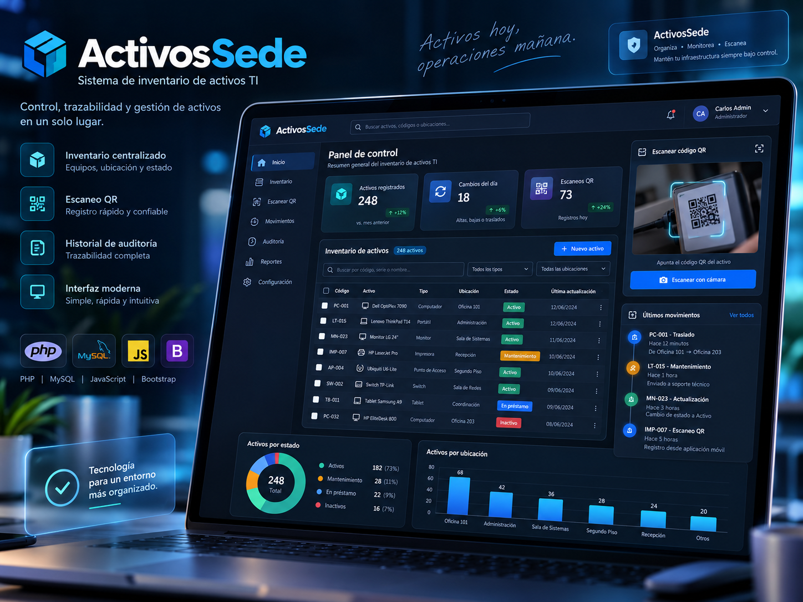

7 años de experiencia en tecnología
PORTAFOLIO PROFESIONAL
Tecnología aplicada a necesidades reales.
Ingeniería, soporte, infraestructura, consultoría, automatización y programación orientadas a resolver problemas operacionales y construir soluciones sostenibles.

Proyecto destacado
ActivosSede
Gestión · QR · Trazabilidad
Operativa · 3 años
PHP
SQL
JS
SOBRE MÍ
Experiencia técnica, visión operacional y desarrollo de soluciones.
Cuento con 7 años de experiencia en soporte TI e infraestructura, realizando soporte N1, N2 y N3, administración de usuarios y servicios, redes, Active Directory, Microsoft 365, resolución de incidentes y continuidad operacional. Complemento esta experiencia con consultorías tecnológicas, automatización y programación.
Los proyectos presentados en este portafolio corresponden a soluciones que desarrollé de forma integral, desde el levantamiento de la necesidad y diseño funcional hasta su programación, pruebas, implementación y evolución. Las aplicaciones se mantienen operativas desde hace 3 años.
Soporte N1 / N2 / N3
Infraestructura
Consultoría TI
Programación
Automatización
Continuidad operacional
ENFOQUE
Un perfil que conecta operación y desarrollo.
La combinación de soporte, infraestructura y programación permite entender el problema desde la operación y construir una solución útil para quienes realmente la utilizan.
Desarrollo
Aplicaciones web completas, desde análisis y datos hasta interfaz e implementación.
Automatización
Optimización de tareas mediante scripting, lógica e integración de procesos.
Infraestructura
Soporte avanzado, redes, Active Directory, Microsoft 365 y continuidad operacional.
Consultoría
Evaluación técnica, levantamiento de riesgos y propuestas de mejora con criterio operacional.
PROYECTOS DESTACADOS
Soluciones reales, presentadas de forma segura.
DESARROLLO INTEGRAL
Del problema a una solución operativa.
En los proyectos presentados participé directamente durante todo el ciclo de desarrollo.
LEVANTAMIENTO
Identificar la necesidad
Comprender usuarios, problema, flujo actual y resultado esperado.
DISEÑO
Definir la solución
Diseñar estructura, experiencia de uso, lógica y tratamiento de información.
DESARROLLO
Construir y probar
Programar frontend, backend, datos, validaciones y realizar pruebas funcionales.
IMPLEMENTACIÓN
Poner en operación y evolucionar
Implementar, mantener, corregir y ampliar funcionalidades según el uso real.
PORTAFOLIO
Proyectos desarrollados.
Todos los proyectos se presentan mediante información funcional de alto nivel y evidencias visuales. El código fuente y los detalles internos se mantienen privados.
EXPERIENCIA VISUAL
Ocho proyectos, ocho presentaciones visuales.
Las imágenes son mockups de presentación creados para mostrar el propósito de cada solución sin publicar información sensible o código.
TECNOLOGÍAS
Herramientas utilizadas en mis soluciones.
Stack utilizado a lo largo de desarrollo, automatización, datos, soporte e infraestructura.
CONTACTO
Ingeniería y tecnología orientadas a resolver.
Este portafolio presenta una selección de soluciones desarrolladas y experiencia aplicada en soporte, infraestructura, consultoría, automatización y programación.